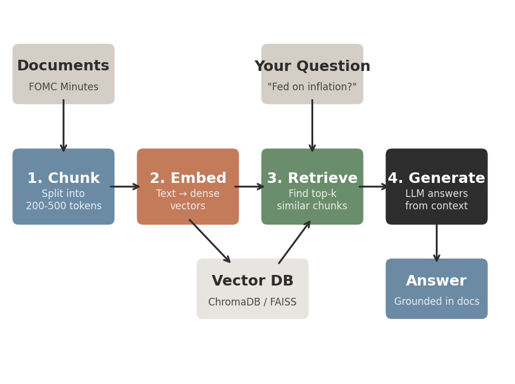
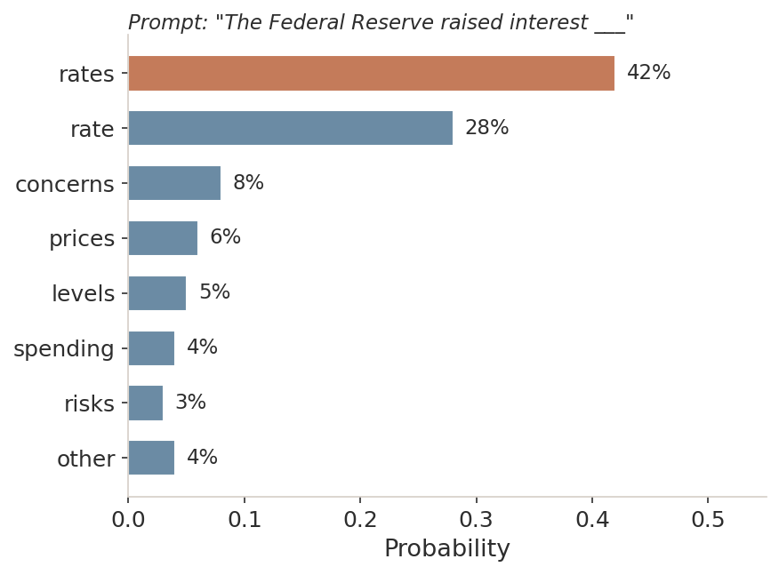
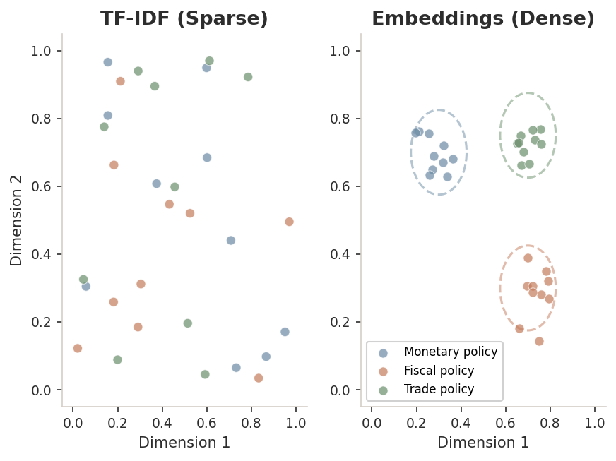
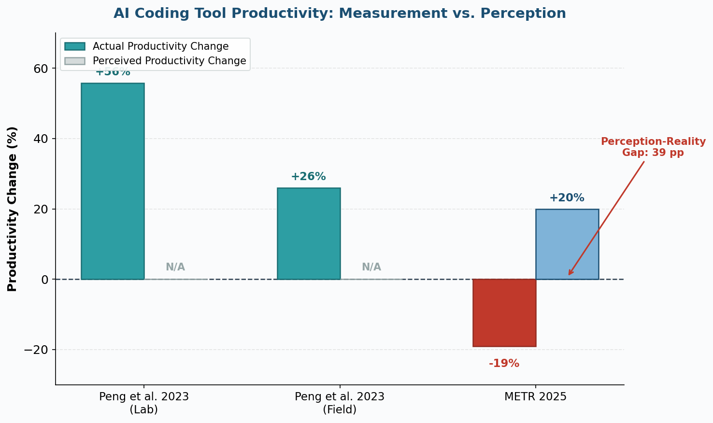
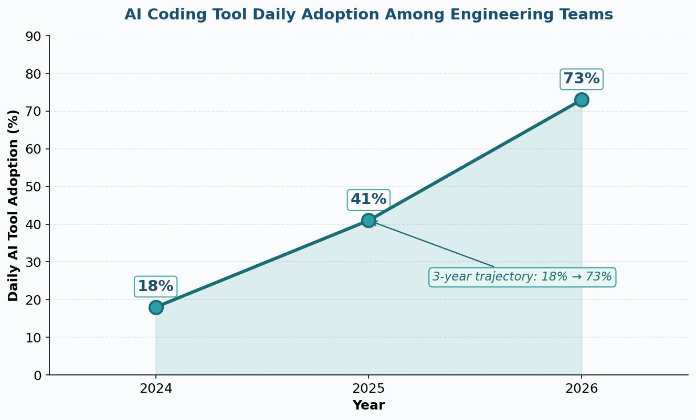

Chapter 25 of 26
ECON 3916: Data Science for Economists
75 min | Presentation + Lab

LO1 — Understand
Explain what LLMs, embeddings, and RAG are and how they differ from supervised ML
LO2 — Apply
Use AI coding tools with effective prompt engineering
LO3 — Evaluate
Evaluate AI-generated analysis using verification frameworks
1. In Ch 23, you converted FOMC minutes into vectors. What technique? → TF-IDF
2. Why can't LASSO directly estimate a treatment effect in DML? → Regularization bias shrinks θ toward zero
3. What was the key idea behind cross-fitting? → Nuisance model never predicts on its own training data
Attorney Steven Schwartz submitted a legal brief citing 6 federal court decisions
Complete with case names, docket numbers, and quoted passages
Every single case was fabricated by ChatGPT
$5,000 fine + required notification to every named judge
How would you verify whether an AI-generated economic claim is true?
Chapter 24: DML
ML → residuals → clean causal estimate
Residualizes out confounding
Chapter 25: RAG
Retrieved docs → grounded context → verifiable output
Residualizes out hallucination
Same epistemic discipline — checking assumptions, verifying outputs, understanding what can go wrong
$$P(w_{t+1} \mid w_1, w_2, \ldots, w_t)$$
Given all previous tokens, predict the next token
No fact database. No verification. Just pattern matching at scale
When ChatGPT writes "CPI was 3.2%," it's producing a high-probability token sequence — the number may or may not be correct

The model assigns probabilities to every possible next token. "Rates" is most likely — but the model doesn't know what the Fed actually did.
Bender et al. (2021): LLMs produce fluent text by stitching together statistical patterns without understanding meaning
"The unemployment rate fell to 3.4% in January 2023"
↑ Not a verified fact. A high-probability token sequence.
Like a parrot reproducing speech without comprehension
The number might be correct. It might not. The model cannot tell the difference.
Ch 23: TF-IDF (Sparse)
One dimension per word
Mostly zeros
No meaning captured
Ch 25: Embeddings (Dense)
384–1536 dimensions
Every dimension carries info
Similar meanings cluster
$$\text{embed}(\text{"inflation expectations"}) \approx \text{embed}(\text{"price forecasts"})$$

An LLM says "US inflation was 3.1% in December 2024." What is this statement?
(A) Wrong: LLMs don't have a "database" they query
(B) Wrong: LLMs aren't running economic forecasting models
(C) Correct: The model generates tokens statistically likely to follow "US inflation was." The number might happen to be correct — we just can't tell from the model alone.
(D) Wrong: The claim might be correct — "hallucination" means we'd need to verify
Think-Pair-Share (4 min)
"When should you trust an AI-generated economic claim? What verification would you need before including it in a research paper?"
Pair prompts:
• Trust AI more for qualitative summaries or quantitative claims?
• Trusting AI to write code vs. stating facts — same or different?
• How is this like trusting a Wikipedia article?
| Mode | What It Does | Example |
|---|---|---|
| Autocomplete | Predicts next few tokens as you type | df.groupby('state') → .agg({'income': 'median'}) |
| Chat | Answers code questions | "How do I compute robust SEs in statsmodels?" |
| Agentic | Plans and executes multi-step tasks | "Download FRED data, merge, run regression, plot" |
Risk increases from left to right — agentic mode can propagate subtle errors silently

Perception gap: ~40 percentage points
Simple tasks: AI accelerates. Complex tasks: AI may slow you down.
Your Advantage
Domain knowledge
Causal reasoning
Identification strategy
Economic interpretation
Judgment calls
AI's Advantage
Data loading code
Table formatting
Matplotlib styling
Library syntax
Boilerplate setup
When debugging AI code takes longer than writing it yourself → you've violated comparative advantage
The METR study found that experienced developers using AI tools were:
Open Discussion (5 min)
"What is YOUR comparative advantage over AI?"
• Which parts of your labs could AI have done?
• Could AI have chosen the right treatment variable in Ch 24?
• What happens as AI improves? Does your advantage shift?
$67.4B
Global business losses from AI hallucinations (2024)
41%
Hallucination rate in finance-related queries
Air Canada chatbot: Fabricated bereavement policy → court ruled airline liable
Industry shift: From "ban AI" → "deploy AI responsibly" (JPMorgan: 450+ use cases, $1.3B/yr)
Same FOMC corpus from Ch 23 — now as a RAG knowledge base instead of TF-IDF vectors
$$\text{retrieved} = \arg\max_{d \in \mathcal{D}} \; \text{sim}(\text{embed}(q), \text{embed}(d))$$
$q$ = your question
$\mathcal{D}$ = all document chunks in the vector database
$\text{sim}(\cdot, \cdot)$ = cosine similarity (how close are the vectors?)
Instead of making things up → the model reads YOUR documents first
RAG reduces hallucination by:
RAG Pipeline
Setup: ~$2,000
Monthly: $350–$2,850
Updates: Near-zero cost
Accuracy: 91% (FinanceBench)
Fine-Tuned Model
Setup: $10K–$50K
Monthly: $2K–$5K
Updates: $500–$5K per retrain
Accuracy: Varies by content
Scenario: 500 FOMC documents, $5K/month budget. Which do you choose?
1. Source Verification — Does the claim cite a verifiable source? No source → unverified.
2. Consistency Check — Does it pass a sanity test? "15% unemployment" → your domain knowledge flags this.
3. Adversarial Testing — Ask the same question differently. Different answers → at least one is wrong.
4. Reproduction — Re-run the analysis yourself. AI accelerates; it doesn't replace.
These are the same habits from 24 chapters of this course — applied to AI output
Your AI says "unemployment hit 15% last quarter." First step?
56%
Wage premium for AI skills (PwC 2025)
Up from 25% in 2024
73%
Engineering teams using AI daily

1. LLMs predict tokens, not facts. Hallucination rates reach 41% in financial contexts.
2. AI productivity depends on context — 55.8% speedup for simple tasks, 19% slowdown for complex ones.
3. RAG grounds AI in your documents — chunk → embed → retrieve → generate. 91% accuracy on financial benchmarks.
4. Verify like an economist — source, consistency, adversarial, reproduction.
5. AI literacy is a career multiplier — 56% wage premium and growing.
1. Explain in one sentence how RAG reduces hallucination compared to using an LLM alone.
2. One thing I'm still unclear about from today's lecture.
Next time: Chapter 26 — Capstone: From Question to Recommendation